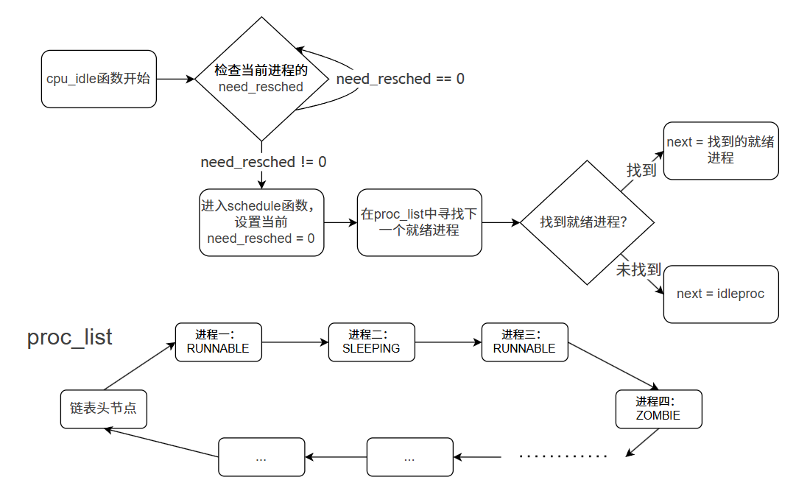

调度并执行内核线程 initproc
在 uCore 执行完 proc_init 函数后，就创建好了两个内核线程：idleproc 和 initproc。此时，uCore 当前的执行现场就是 idleproc。当执行到 init 函数的最后一个函数 cpu_idle 之前，uCore 的所有初始化工作就已经完成了。idleproc 将通过执行 cpu_idle 函数主动让出 CPU，让其他内核线程得以执行，具体过程如下：
void
cpu_idle(void) {
while (1) {
if (current->need_resched) {
schedule();
...
首先，判断当前内核线程 idleproc 的 need_resched 是否不为 0。回顾前面“创建第一个内核线程 idleproc”的描述，proc_init 函数在初始化 idleproc 时就把 idleproc->need_resched 置为 1，因此会马上调用 schedule() 函数去寻找其他处于“就绪态”（即 PROC_RUNNABLE）的进程执行。
须知：uCore 中的进程状态
在 uCore 操作系统中，进程在其生命周期中会经历四种基本状态：
- PROC_UNINIT（未初始化）：进程控制块刚被创建，尚未完成初始化
- PROC_RUNNABLE（就绪/运行）：进程已准备好运行，可能正在等待 CPU 或正在 CPU 上执行
- PROC_SLEEPING（睡眠/阻塞）：进程因等待某个事件或资源而暂时无法执行
- PROC_ZOMBIE（僵尸）：进程已执行完毕，等待父进程回收其资源
在
schedule函数中，只有处于PROC_RUNNABLE状态的进程才会被选中执行。进程状态的切换将在后续章节详细介绍。
进程调度是多线程系统并发执行的基础。调度器通过一定的调度算法，在特定的调度点上触发调度，最终完成进程切换。其核心思想是：在调度点到达时，从可运行线程（PROC_RUNNABLE）中选择一个线程，并通过 switch_to 完成上下文切换。
在实验四中，调度点唯一位于 cpu_idle 函数中。当 idleproc 发现 need_resched == 1 时，会调用 schedule() 来触发调度。
uCore 在这里实现的时一个最简单的 FIFO 调度器。schedule() 的执行逻辑可以概括为以下几步：
- 将当前内核线程
current->need_resched置为 0。 - 在
proc_list链表中查找下一个处于PROC_RUNNABLE状态的线程或进程next。 - 找到合适的进程后，调用
proc_run()函数，保存当前进程current的执行现场（进程上下文），恢复新进程的执行现场，完成进程切换。

其中，在 proc_list 中查找下一个就绪进程时，会有三种情况：
- 当前进程不是
idleproc：从当前进程的下一个位置开始查找，实现 Round-Robin 轮转调度。 - 当前进程是
idleproc：从链表头开始查找，给所有进程平等机会。 - 找不到就绪进程：遍历整个链表都没找到，则最后使用
idleproc保底。
至此，找到下一个就绪进程后，新的进程 next 就开始执行了。由于 proc_list 中当前只有两个内核线程，而 idleproc 需要让出 CPU 给 initproc。我们可以看到 schedule() 通过查找proc_list 进程队列，只会找到一个处于“就绪”态的 initproc 内核进程，并调用 proc_run()，最终通过 switch_to 完成两个执行现场的切换。具体流程如下：
- 将当前运行的进程设置为要切换过去的进程。
- 将页表切换到新进程的页表。
- 使用
switch_to切换到新进程的上下文。
switch_to 函数（位于 switch.S）会保存前一个进程的寄存器上下文，恢复新进程的上下文，从而完成真正的 CPU 上的切换。函数参数是前一个进程和后一个进程的执行现场：process context。在上一节“设计进程控制块”中，描述了context结构包含的要保存和恢复的寄存器。我们再看看switch_to函数的执行流程：
.text
# void switch_to(struct proc_struct* from, struct proc_struct* to)
.globl switch_to
switch_to:
# save from's registers
STORE ra, 0*REGBYTES(a0)
STORE sp, 1*REGBYTES(a0)
STORE s0, 2*REGBYTES(a0)
STORE s1, 3*REGBYTES(a0)
STORE s2, 4*REGBYTES(a0)
STORE s3, 5*REGBYTES(a0)
STORE s4, 6*REGBYTES(a0)
STORE s5, 7*REGBYTES(a0)
STORE s6, 8*REGBYTES(a0)
STORE s7, 9*REGBYTES(a0)
STORE s8, 10*REGBYTES(a0)
STORE s9, 11*REGBYTES(a0)
STORE s10, 12*REGBYTES(a0)
STORE s11, 13*REGBYTES(a0)
# restore to's registers
LOAD ra, 0*REGBYTES(a1)
LOAD sp, 1*REGBYTES(a1)
LOAD s0, 2*REGBYTES(a1)
LOAD s1, 3*REGBYTES(a1)
LOAD s2, 4*REGBYTES(a1)
LOAD s3, 5*REGBYTES(a1)
LOAD s4, 6*REGBYTES(a1)
LOAD s5, 7*REGBYTES(a1)
LOAD s6, 8*REGBYTES(a1)
LOAD s7, 9*REGBYTES(a1)
LOAD s8, 10*REGBYTES(a1)
LOAD s9, 11*REGBYTES(a1)
LOAD s10, 12*REGBYTES(a1)
LOAD s11, 13*REGBYTES(a1)
ret
可以看出来这段代码就是将需要保存的寄存器进行保存和调换。其中的a0和a1是RISC-V 架构中通用寄存器，它们用于传递参数，也就是说a0指向原进程，a1指向目的进程。
在之前我们也已经谈到过了，这里只需要调换被调用者保存寄存器即可。由于我们在初始化时把上下文的ra寄存器设定成了forkret函数的入口，所以这里会返回到forkret函数。forkrets函数很短，位于kern/trap/trapentry.S：
.globl forkrets
forkrets:
# set stack to this new process's trapframe
move sp, a0
j __trapret
这里把传进来的参数，也就是进程的中断帧放在了sp，这样在__trapret中就可以直接从中断帧里面恢复所有的寄存器啦！我们在初始化的时候对于中断帧做了一点手脚，epc寄存器指向的是kernel_thread_entry，s0寄存器里放的是新进程要执行的函数，s1寄存器里放的是传给函数的参数。在kernel_thread_entry函数中：
.text
.globl kernel_thread_entry
kernel_thread_entry: # void kernel_thread(void)
move a0, s1
jalr s0
jal do_exit
我们把参数放在了a0寄存器，并跳转到s0执行我们指定的函数！这样，一个进程的初始化就完成了。至此，我们实现了基本的进程管理，并且成功创建并切换到了我们的第一个内核进程。